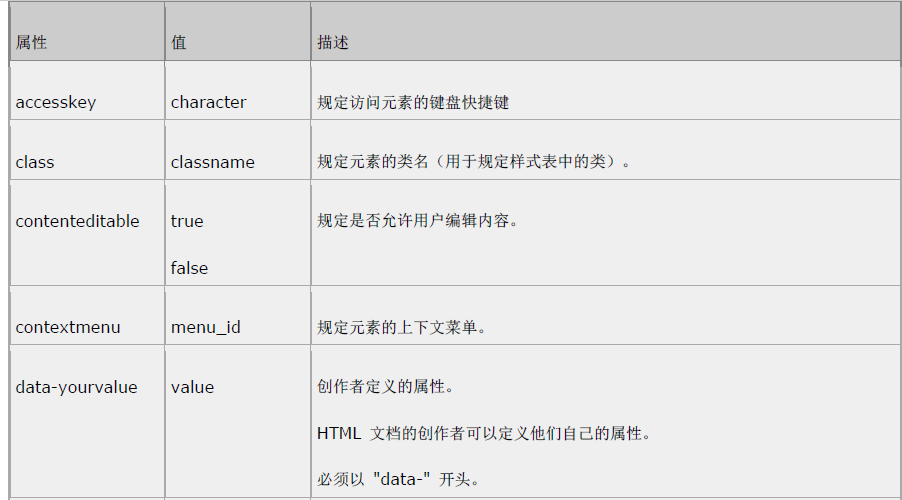

注释：
4: 指示在 HTML 4.01 中定义了该元素
5: 指示在 HTML 5 中定义了该元素
标签 | 描述 | 4 | 5 |
<!--...--> | 定义注释 | 4 | 5 |
<!DOCTYPE> | 定义文档类型 | 4 | 5 |
<a> | 定义超链接 | 4 | 5 |
<abbr> | 定义缩写 | 4 | 5 |
<acronym> | 定义首字母缩写 | 4 | |
<address> | 定义地址元素 | 4 | 5 |
<applet> | 定义applet | 4 | |
<area> | 定义图像映射中的区域 | 4 | 5 |
<article> | 定义article | 5 | |
<aside> | 定义页面内容之外的类容 | 5 | |
<audio> | 定义声音内容 | 5 | |
<b> | 定义粗体文字 | 4 | 5 |
<base> | 定义页面中所有链接的基准URL | 4 | 5 |
<basefont> | 请使用css代替 | 4 | |
<bdo> | 定义文本显示的方向 | 4 | 5 |
<big> | 定义大号文本 | 4 | |
<blockquote> | 定义长的引用 | 4 | 5 |
<body> | 定义body元素 | 4 | 5 |
<br> | 插入换行符 | 4 | 5 |
<button> | 定义按钮 | 4 | 5 |
<canvas> | 定义图形 | 5 | |
<caption> | 定义表格标题 | 4 | 5 |
<center> | 《定义剧中文本 | 4 | |
<cite> | 定义引用 | 4 | 5 |
<code> | 定义计算机代码文本 | 4 | 5 |
<col> | 定义表格列的属性 | 4 | 5 |
<colgroup> | 定义表格列的分组 | 4 | 5 |
<command> | 定义命令按钮 | 5 | |
<datalist> | 定义下拉列表 | 5 | |
<dd> | 定义定义的描述 | 4 | 5 |
<del> | 定义删除文本 | 4 | 5 |
<details> | 定义元素的细节 | 5 | |
<dfn> | 定义定义项目 | 4 | 5 |
<dir> | 定义目录列表 | 4 | |
<div> | 定义文档中的一个部分 | 4 | 5 |
<dl> | 定义定义列表 | 4 | 5 |
<dt> | 定义定义的项目 | 4 | 5 |
<em> | 定义强调文本 | 4 | 5 |
<embed> | 定义外部交互内容或插件 | 5 | |
<fieldset> | 定义fieldset | 4 | 5 |
<figcaption> | 定义figure元素的标题 | 5 | |
<figure> | 定义媒介内容的分组，以及他们的标题 | 5 | |
<font> | 4 | ||
<footer> | 定义section或page的页脚 | 5 | |
<form> | 定义表单 | 4 | 5 |
<frame> | 定义子窗口（框架） | 4 | |
<frameset> | 定义框架的集 | 4 | |
<h1>to<h6> | 标题 | 4 | 5 |
<head> | 定义关于文档的信息 | 4 | 5 |
<header> | 定义section或page的页眉 | 5 | |
<hgroup> | 定义有关文档中的section的信息 | 5 | |
<hr> | 定义水平线 | 4 | 5 |
<html> | 定义html文档 | 4 | 5 |
<i> | 定义斜体文本 | 4 | 5 |
<iframe> | 定义行内的子窗口（框架） | 4 | 5 |
<img> | 定义图像 | 4 | 5 |
<input> | 定义输入域 | 4 | 5 |
<ins> | 定义插入文本 | 4 | 5 |
<keygen> | 定义生成密钥 | 5 | |
<isindex> | 定义单行的输入域 | 4 | |
＜kbd> | 定义键盘文本 | 4 | 5 |
<label> | 定义表单控件的标注 | 4 | 5 |
<legend> | 定义fieldset中的标题 | 4 | 5 |
<li> | 定义列表的项目 | 4 | 5 |
<link> | 定义资源引用 | 4 | 5 |
<map> | 定义图像映射 | 4 | 5 |
<mark> | 定义有记号的文本 | 4 | 5 |
<menu> | 定义菜单列表 | 4 | 5 |
<meta> | 定义元信息 | 4 | 5 |
<meter> | 定义预定义范围内的度量 | 5 | |
<nav> | 定义导航链接 | 5 | |
<noframes> | 定义noframe部分 | 4 | |
<noscript> | 定义noscript部分 | 4 | 5 |
<object> | 定义嵌入对象 | 4 | 5 |
<ol> | 定义有序列表 | 4 | 5 |
<optgroup> | 定义选项组 | 4 | 5 |
<option> | 定义下拉列表中的选项 | 4 | 5 |
<output> | 定义输出的一些类型 | 5 | |
<p> | 定义段落 | 4 | 5 |
<param> | 为对象定义参数 | 4 | 5 |
<pre> | 定义预格式化文本 | 4 | 5 |
<progress> | 定义任何类型的任务的进度 | 5 | |
<q> | 定义短的引用 | 4 | 5 |
<rp> | 定义若浏览器不支持ruby元素显示的内容 | 5 | |
<rt> | 定义ruby注释的解释 | 5 | |
<ruby> | 定义ruby注释 | 5 | |
<s> | 定义加删除线的文本 | 4 | |
<samp> | 定义样本计算机代码 | 4 | 5 |
<script> | 定义脚本 | 4 | 5 |
<section> | 定义section | 5 | |
<select> | 定义可选列表 | 4 | 5 |
<small> | 定义小号文字 | 4 | 5 |
<source> | 定义媒介源 | 5 | |
<span> | 定义文档中的section | 4 | 5 |
<strike> | 定义加删除线的文本 | 4 | |
<strong> | 定义强调文本 | 4 | 5 |
<style> | 定义样式文本 | 4 | 5 |
<sub> | 定义下标文本 | 4 | 5 |
<summary> | 定义details元素的标题 | 5 | |
<sup> | 定义上标文本 | 4 | 5 |
<table> | 定义表格 | 4 | 5 |
<tbody> | 定义表格的主体 | 4 | 5 |
<td> | 定义表格单元 | 4 | 5 |
<textarea> | 定义textarea | 4 | 5 |
<tfoot> | 定义表格的脚注 | 4 | 5 |
<th> | 定义表头 | 4 | 5 |
<thead> | 定义表头 | 4 | 5 |
<time> | 定义日期/时间 | 5 | |
<title> | 定义文档的标题 | 4 | 5 |
<tr> | 定义表格行 | 4 | 5 |
<tt> | 定义打字机文本 | 4 | |
<u> | 顶一下划线文本 | 4 | |
<ul> | 定义无序列表 | 4 | 5 |
<var> | 定义变量 | 4 | 5 |
<video> | 定义视频 | 5 | |
<xmp> | 定义预格式文本 | 4 | |
HTML 5 标准属性
所有 HTML 5 标签均支持下面列出的属性，仅有少数例外。
属性 | 值 | 描述 |
accesskey class | character chassname | 规定访问元素的键盘快捷键 规定元素的类名（用于规定样式表中的类） |
contenteditable | true false | 规定是否允许用户编辑内容 |
contextmenu | menu_id | 规定元素的上下文菜单 |
data-yourvalue dir | value ltr rtl | 创作者定义的属性 HTML文档的创作者可以定义他们自己的属性 必须以"data-"开头 规定元素中内容的文本方向 |
draggable hidden id item | true false auto hidden id empty url | 规定是否允许用户拖动元素 规定该元素是无关的。被隐藏的元素不会显示 规定元素唯一的ID 用于组合元素 |
itemprop | url group value | 用于组合项目 |
lang | language_code | 规定元素中内容的语言代码 |
spellcheck | true false | 规定是否必须对元素进行拼写或语法检查 |
style | style_definition | 规定元素的行内样式 |
subject | id | 规定元素对应的项目 |
tabindex | number | 规定元素的tab键控制次序 |
title | text | 规定有关元素的额外信息 |
HTML 5 标准属性
所有 HTML 5 标签均支持下面列出的属性，仅有少数例外。
HTML 5 标准属性
NEW：HTML 5 中新的标准属性。
注释：HTML 4.01 不再支持 accesskey 属性：



HTML 5 事件属性
- Window事件属性-Window Event Attributes
- 表单事件 - Form Events
- 键盘事件 - Keybord Events
- 鼠标事件 - Mouse Events
- 媒介事件 - Media Events
Window 事件属性
window对象触发的事件
| 属性 | 值 | 描述 |
onafterprint | script | 在打印文档之后运行脚本 |
onbeforeprint | script | 在文档打印之前运行脚本 |
onbeforeonload | script | 在文档加载之前运行脚本 |
onblur | scripyt | 当窗口失去焦点时运行脚本 |
onerror | script | 当错误发生试运行脚本 |
onfocus | script | 当窗口获得焦点时运行脚本 |
onhaschange | script | 当文档改变时运行脚本 |
onload | script | 当文档加载时运行脚本 |
onmessage | script | 当触发消息时运行脚本 |
onoffline | script | 当文档离线时运行脚本 |
ononline | script | 当文档上线时运行脚本 |
onpagehide | script | 当窗口隐藏时运行脚本 |
onpageshow | script | 当窗口可见时运行脚本 |
onpopstate | script | 当窗口历史记录改变时运行脚本 |
onredo | script | 当文档执行在执行操作(redo)时运行脚本 |
onresize | script | 当调整窗口大小时运行脚本 |
onstorage | script | 当文档加载加载时运行脚本 |
onundo | script | 当文档执行撤销操作时运行脚本 |
onunload | script | 当用户离开文档时运行脚本 |
表单事件
由 HTML 表单内部的动作触发的事件。
适用于所有 HTML 5 元素，不过最常用于表单元素中：
属性 | 值 | 描述 |
onblur | script | 当元素失去焦点时运行脚本 |
onchange | script | 当元素改变时运行脚本 |
oncontextmenu | script | 当触发上下文菜单时运行脚本 |
onfocus | script | 当元素获得焦点时运行脚本 |
onformchange | script | 当表单改变时运行脚本 |
onforminput | script | 当表单获得用户输入时运行脚本 |
oninput | script | 当元素获得用户输入时运行脚本 |
oninvalid | script | 当元素无效时运行脚本 |
onreset | script | 当表单重置时运行脚本 |
onselect | script | 当选取元素时运行脚本 |
onsubmit | script | 当提交表单时运行脚本 |
键盘事件
由键盘触发的事件。
适用于所有 HTML 5 元素：
属性 | 值 | 描述 |
onkeydown | script | 当按下按键时运行脚本 |
onkeypress | script | 当按下并松开按键时运行脚本 |
onkeyup | script | 当松开按键时运行脚本 |
鼠标事件
由鼠标货相似的用户动作触发的事件。
适用于所有 HTML 5 元素：
属性 | 值 | 描述 |
onclick | script | 当单击鼠标时运行脚本 |
ondblclick | script | 双击鼠标 |
ondrag | script | 拖动元素时 |
ondragend | script | 拖动操作结束时 |
ondragenter | script | 当元素被拖动至有效的拖放目标时 |
ondragleave | script | 元素离开有效拖放目标时 |
ondragover | script | 元素被拖动至有效拖放目标上方时 |
ondragstart | script | 当拖动操作开始时运行脚本 |
ondrop | script | 当被拖动元素正在被拖放时 |
onmousedown | script | 按下鼠标按钮时 |
| onmousemove | script | 鼠标指针移动时 |
onmouseout | script | 鼠标指针移出元素时 |
onmouseover | script | 鼠标指针移至元素之上时 |
onmouseup | script | 松开鼠标按钮时 |
onmousewheel | script | 转动鼠标滚轮时 |
onscroll | script | 当滚动元素滚动元素的滚动条时 |
媒介事件
由视频、图像以及音频等媒介触发的事件。
适用于所有 HTML 5 元素，不过在媒介元素（诸如 audio、embed、img、object 以及 video）中最常用：
属性 | 值 | 描述 |
onabort | script | 发生终止事件时 |
oncanplay | script | 当媒介能够开始播放但可能因缓冲而需要停止时 |
oncanplaythrough | script | 当媒介能够无需因缓冲而停止即可播放至结尾时 |
ondurationchange | script | 当媒介长度改变时 |
onemptied | script | 媒介资源元素突然为空时（网络错误、加载错误等） |
onended | script | 媒介已抵达结尾时 |
onerror | script | 当在元素加载期间发生错误时运行脚本 |
onloadeddata | script | 当加载媒介数据时运行脚本 |
onloadedmetadata | script | 当媒介元素的持续时间以及其他媒介数据已加载时运行脚本 |
onloadstart | script | 当浏览器开始加载媒介数据时 |
onpause | script | 当媒介数据暂停时 |
onplay | script | 当媒介数据将要开始播放时 |
onplaying | script | 当媒介数据已开始播放时 |
onprogress | script | 当浏览器正在取媒介数据时 |
onratechange | script | 当媒介数据的播放速率改变时 |
onreadystatechange | script | 当就绪状态（ready-state）改变时运行脚本 |
onseeked | script | 当媒介元素的定位属性 [1] 不再为真且定位已结束时 |
onseeking | script | 当媒介元素的定位属性为真且定位已开始时 |
onstalled | script | 当取回媒介数据过程中（延迟）存在错误时 |
onsuspend | script | 当浏览器已在取媒介数据但在取回整个媒介文件之前停止时 |
ontimeupdate | script | 当媒介改变其播放位置时 |
onvolumechange | script | 当媒介改变音量亦或当音量被设置为静音时 |
onwaiting | script | 当媒介已停止播放但打算继续播放时 |